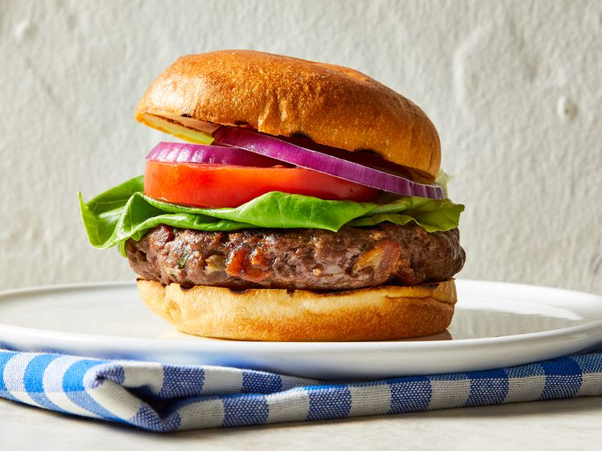

Venison Bacon Burgers

Description
These tasty, juicy venison burgers make a change from normal beef patties.
Ingredients
- 6 slices bacon, minced
- 2 tablespoons olive oil
- 2 shallots, minced
- 1 teaspoon minced garlic
- 2 pounds ground venison
- 1 tablespoon Worcestershire sauce
- 1 tablespoon chopped fresh parsley
- salt and pepper to taste
- 1 large egg, beaten to mix
- 6 hamburger buns
Steps
- Gather all ingredients.
-
Cook bacon in a skillet over medium heat until browned and crispy.
- Pour bacon and grease into a heatproof bowl and allow to cool.
-
Heat oil in a skillet. Add shallots and garlic. Cook and stir until
softened, about 3 minutes.
- Mix with bacon.
-
Mix venison with cooled bacon mixture. Season with Worcestershire sauce,
parsley, salt, and pepper. Stir in egg until evenly combined.
Refrigerate for 20 minutes.
- Preheat an outdoor grill for medium-high heat.
- Shape venison mixture into 6 patties.
-
Grill to desired doneness. Serve on toasted hamburger buns with your
favorite toppings.